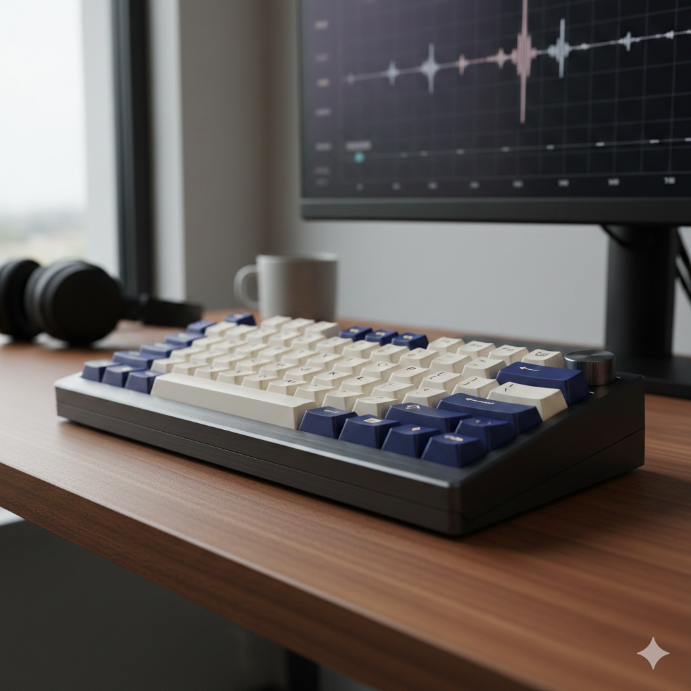

5 Best Budget Mechanical Keyboards for Typing in 2026

Agar aap sara din typing karte hain, to aik normal plastic keyboard aapki ungliyon aur speed ke liye bohot bura hai...
1. WOBKEY Rainy75: The Aluminum King for Under $100
WOBKEY Rainy75 review, best aluminum mechanical keyboard, budget gasket mount keyboard, premium budget keyboard, WOBKEY keyboard price
The WOBKEY Rainy75 has quickly ascended to legendary status as the "budget luxury" king.
It redefines expectations by offering an all-aluminum typing experience that was once exclusive to keyboards costing three times as much. For typists seeking a substantial, high-end feel without the premium price tag, the Rainy75 is an undeniable champion.
Why it's perfect for typists: Its gasket-mount design combined with multiple layers of sound-dampening foam delivers an unparalleled typing experience. The sound profile is often described as "creamy" or "marbly," making every keystroke a delight. The build quality feels incredibly robust, providing a stable and satisfying platform for long typing sessions.
Key Specs: All-aluminum chassis, versatile tri-mode wireless connectivity (Bluetooth, 2.4GHz, USB-C), durable PBT keycaps.
Best for: Users who crave a premium, heavy-duty mechanical keyboard with an exceptional sound profile and build quality that belies its affordable price.
Pros: Dust proof switches, Metal body, RGB lighting.
Cons: Shor zyada karta hai (Noisy).

2. Keychron C3 Pro: The Reliable Entry Point with QMK/VIA

Keychron C3 Pro review, best budget QMK keyboard, affordable TKL mechanical keyboard, Keychron mechanical keyboard, typing keyboard under $50 For those entering the mechanical keyboard world on a tight budget, the Keychron C3 Pro is the ultimate starting point in 2026. Keychron has built a reputation for reliability and quality, and the C3 Pro delivers an exceptional experience without breaking the bank, often found for under $50. Keychron C3 Pro What sets the C3 Pro apart from other ultra-affordable boards is its crucial support for QMK/VIA. This allows you to remap every single key to your precise preferences using a user-friendly web interface, offering unparalleled customization. The internal gasket structure provides a soft, comfortable typing feel, reducing hand fatigue during extended use. Key Specs: Classic Tenkeyless (TKL) layout, robust wired-only connection for stability, available with popular red (linear) or brown (tactile) switches. Best for: Students, office workers, or first-time mechanical keyboard buyers who need a reliable, customizable, and cheap mechanical keyboard that performs well above its price point.
3. Ajazz AK820 Pro: Feature-Rich with a Smart Screen

Ajazz AK820 Pro review, mechanical keyboard with screen, budget 75% keyboard, best pre-lubed switches keyboard, wireless mechanical keyboard with knob The Ajazz AK820 Pro is a testament to how far budget keyboards have come. This 75% layout keyboard is a "feature king," incorporating a customizable TFT smart screen and a versatile volume knob—features typically found only on much more expensive, high-end models. Why it's perfect for typists: Beyond its eye-catching display, the AK820 Pro truly shines for typing. It comes equipped with "Gift" or "Flying Fish" switches, which are meticulously pre-lubed at the factory. This ensures an incredibly smooth, consistent, and scratch-free keystroke right out of the box. The gasket-mount design further enhances the typing experience, providing a flexible and comfortable bounce that makes long writing sessions a breeze. Key Specs: Compact 75% layout, integrated OLED screen for custom GIFs or system info, versatile tri-mode wireless connectivity. Best for: Tech enthusiasts and content creators who desire extra "bells and whistles" like a screen for quick access to information or personalized flair, all within a reasonable budget.
Pros: Mac aur Windows dono ke liye perfect, Gasket mount feel.
Cons: Wireless nahi hai.
Epomaker x Aula F75: The Best "Thock" Out of the Box

Aula F75 review, best sounding mechanical keyboard budget, thocky mechanical keyboard, Epomaker F75, budget keyboard for writers The Epomaker x Aula F75 has garnered a massive following for what many consider to be the best "stock" sound profile in the budget mechanical keyboard industry. If you've been chasing that satisfying, deep "thocky" sound without needing to mod your keyboard, the F75 is your answer. Why it's perfect for typists: Its secret lies in the exceptional LEOBOG Reaper switches, which are renowned for their incredible smoothness. However, the true magic is in the internal acoustic tuning, which is specifically designed to produce deep, resonant "thocky" sounds. This makes every keystroke incredibly satisfying and addictive, perfect for long hours of writing or coding. You get a premium audio experience without any extra effort. Key Specs: Practical 75% layout, convenient volume knob, sophisticated multi-layered sound dampening for optimal acoustics. Best for: Writers, programmers, and sound enthusiasts who prioritize the acoustic feedback and "feel" of their keyboard, desiring a deep, high-quality "thock" right from the moment they unbox it.
Blue Switches: Bohat shor aur clicky (Typists ke liye best).
Red Switches: Bohat naram aur quiet (Gaming aur office ke liye best).
5: Royal Kludge R65: Compact Powerhouse with QMK/VIA

Royal Kludge R65 review, best 60% mechanical keyboard, compact QMK keyboard, Royal Kludge budget keyboard, portable mechanical keyboard For those who value desk space or portability, the Royal Kludge R65 offers a powerful and compact solution. This 60% layout keyboard manages to squeeze in a dedicated volume knob—a rare and highly appreciated feature for this smaller form factor, making it an ideal compact mechanical keyboard. Why it's perfect for typists:Key Specs: Highly compact 60% layout, full QMK/VIA programmability, high-quality PBT MDA profile keycaps. Best for: Minimalists, digital nomads, or anyone needing a high-quality, programmable mechanical keyboard that fits easily into a bag or on a small desk without sacrificing functionality.